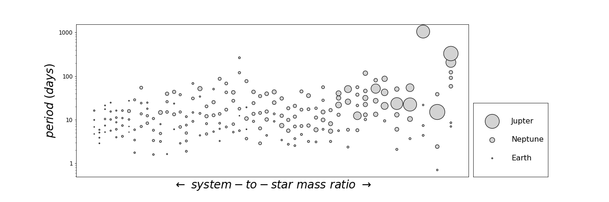

Of the thousands of known exoplanets, nearly half are found in systems with multiple planets. The arrangement of masses, radii, periods, and inclinations within each of these systems is markedly nonrandom, but describing such patterns is a complex task. I'm leveraging ideas from information theory in order to capture the global architecture of each system, with an eye towards (1) classifying subpopulations of systems, (2) identifying which systems are most likely to host additional undetected planets, and (3) providing better empirical targets for formation models.
